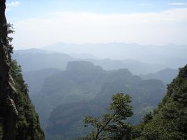

位置境遇
达州地处川渝鄂陕四省市结合部和长江上游成渝经济带，是四川对外开放的"东大门"和四川重点建设的百万人口区域中心城市，达州市幅员面积16591平方公里。
地貌
达州市地势东北高（大巴山区），西南低（盆地丘陵区）。最高处是宣汉县鸡唱乡大团堡，海拔2458.3米；最低处是渠县望溪乡天关村，海拔222米。大巴山横直在万源宣汉北部，明月山、铜锣山、华蓥山由北而南，纵卧其间，将达州市分割为山区、丘陵、平坝3块。山地占幅员面积70.70%，丘陵占28.10%，平坝占1.20%。北部山体切割剧烈，山势陡峭，形成中、低山地貌单元；中南部较为平缓，形成平等谷地地貌单元。
气候
达州市属亚热带湿润季风气候类型。由于地形复杂，区域性气候差异大。海拔800米以下的低山、丘陵、河谷地区气候温和，冬暖、春早、夏热、秋凉，四季分明，无霜期长；海拔800至1000米的低、中山气候温凉、阴湿，回春迟，夏日酷热，秋凉早，冬寒长；海拔1000米以上的中山区，光热资源不足，寒冷期较长，春寒和秋霜十分突出。达州市热量资源丰富，雨热同期，全年平均气温14.7度～17.6度之间，无霜期300天左右。达州市雨量充沛，年平均雨量在1076至1270毫米之间。春季多寒潮低温天气，夏季多伏旱和洪涝、大风、冰雹，秋季多连绵阴雨。
地图